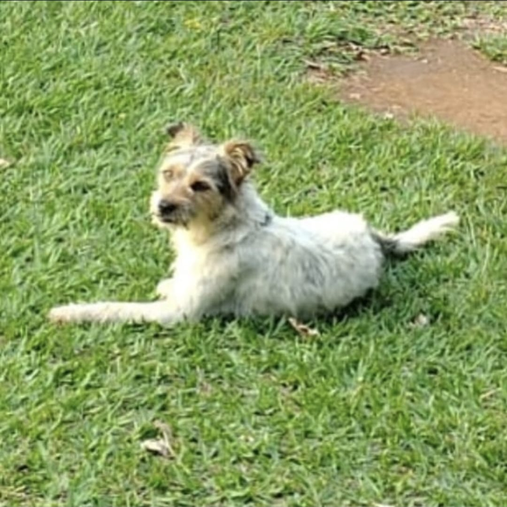

Bem-vindos ao coração da Resgacti!
Desde 2009, nossa ONG dedica-se com paixão ao trabalho voluntário de proteção animal e ambiental em
Itajubá e arredores.
Nosso maior desejo é ver cada animal encontrando um lar cheio de amor.
Nossa Missão
Acreditamos que cada animal merece uma segunda chance. Nossa missão é oferecer abrigo seguro, nutrição
adequada, cuidados veterinários e, acima de tudo, muito carinho aos animais resgatados ou doados.
Trabalhamos incansavelmente para encontrar famílias responsáveis que abram seus lares e corações para
esses seres especiais.
Amor e cuidado pelos animais de Itajubá e região.
Conheça Nossos Amigos à Espera de um Lar
Bia
Porte: Pequeno
Idade: 8 anos
Temperamento: Calma, carinhosa
Martin
Porte: Pequeno
Idade: 3 anos
Temperamento: Alegre, brincalhão
Cristina
Porte: Médio
Idade: 10 anos
Temperamento: Tranquila, leal
Milk
Porte: Pequeno
Idade: 12 anos
Temperamento: Doce, companheira
Thobias
Porte: Grande
Idade: 5 anos
Temperamento: Enérgico, divertido
Vitor
Porte: Médio
Idade: 7 anos
Temperamento: Amigável, sociável
Almodenga
Porte: Pequeno
Idade: 9 anos
Temperamento: Carinhosa, caseira
Alfredo
Porte: Médio
Idade: 6 anos
Temperamento: Inteligente, curioso